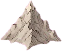


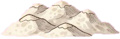
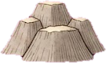


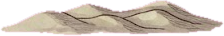
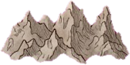


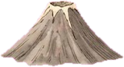

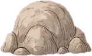


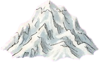


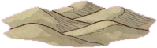


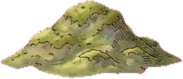
概要: 発注文どおりマゼンタ背景で届いた見本シートから、山の部品を1個ずつ切り出しました(背景は透明)。部品への点数付け(群れ・頂点)は次の工程です。











ユーザーが送ってくれた線画シート(3つ目の版=幅506。前の版より大きく、近い群れの分離も良いので差し替え)。線は黒、内側は紙色で塗り、外側は透明にしてあります。色と明暗は後から地形に合わせて塗る前提の「形だけの部品」です。


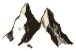


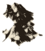


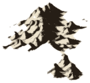
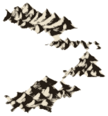


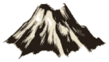


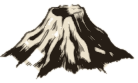


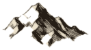
限界: 元画像が小さく(幅506)、部品は約100〜200画素で拡大すると粗い。近い群れは1個に連結(線17などは複数の群れが1個)。線は元より太く出た。紙色の塗りは私の仮の色。目視確認のみ。
ユーザーが送ってくれた大きい版。前の線画(幅約500)より約2倍の細かさで、火山(煙つき)・火口・遺跡風の岩塔・岩の山・崖・丘など種類も増えました。外側透明・内側は仮の紙色です。
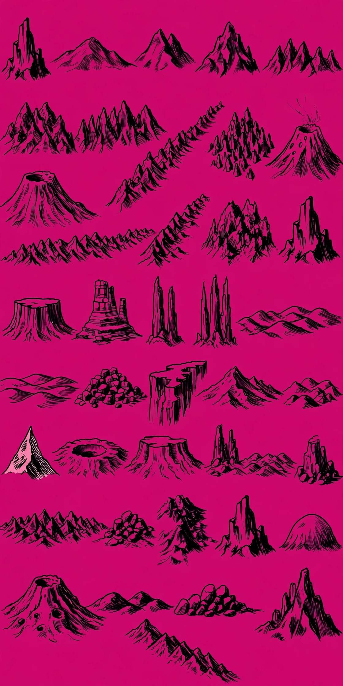


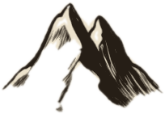
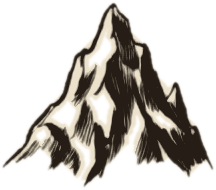
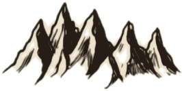

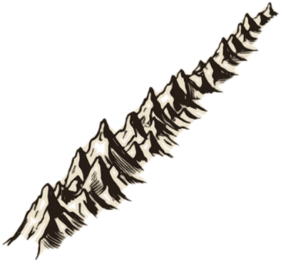
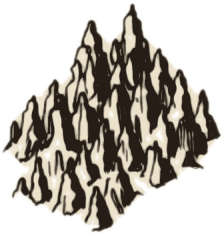
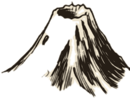
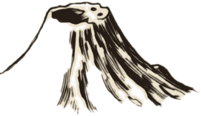
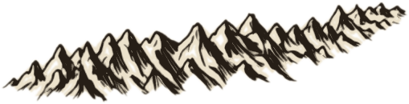
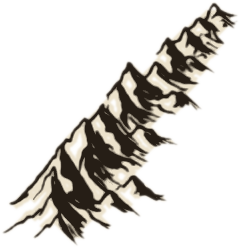
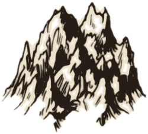


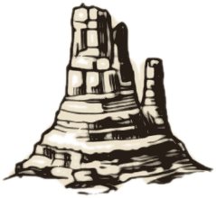


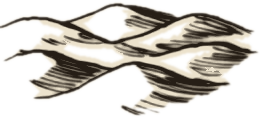
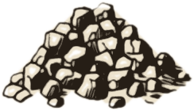


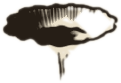

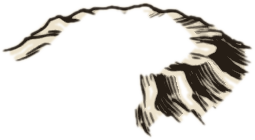
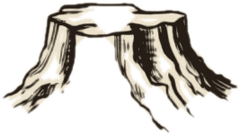
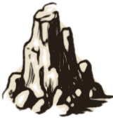
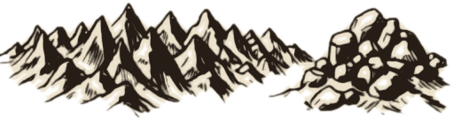
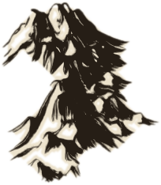


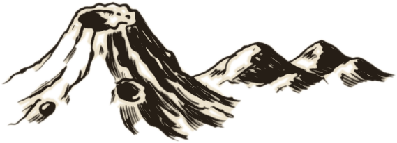

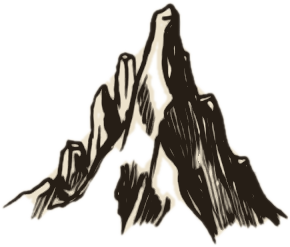
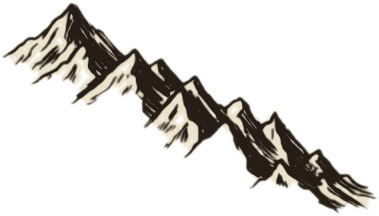
限界: 近くの2つが1個につながった部品あり(高23・高26・高30・高34)。高25(火口)は内側が透け気味で、高24は元から薄桃色の塗りが混ざる。線が太く出る。目視確認のみ。
崖の塊・段のある台地・川のある峡谷・長い連なりの横長絵・大きな群れの山が追加されました。外側透明・内側は仮の紙色です。
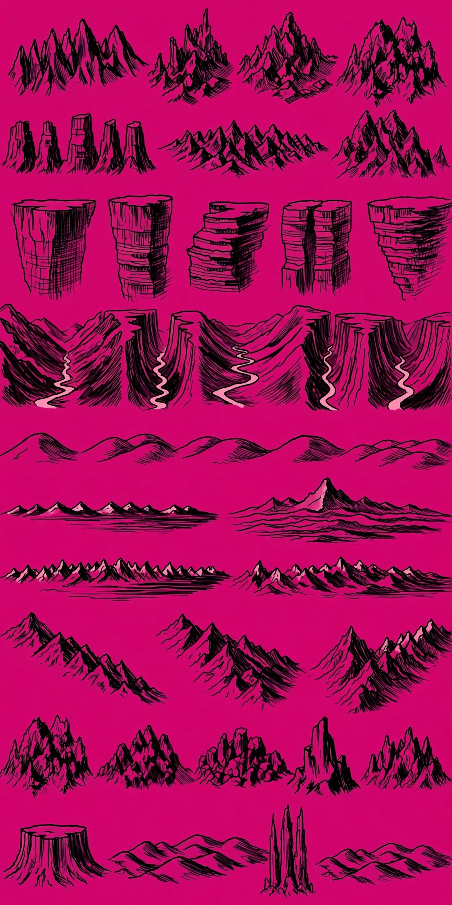

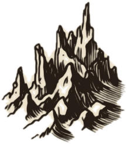

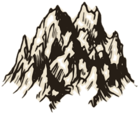

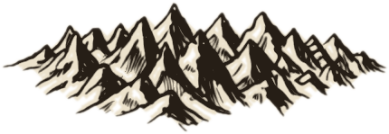

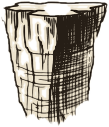
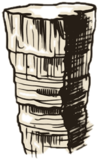


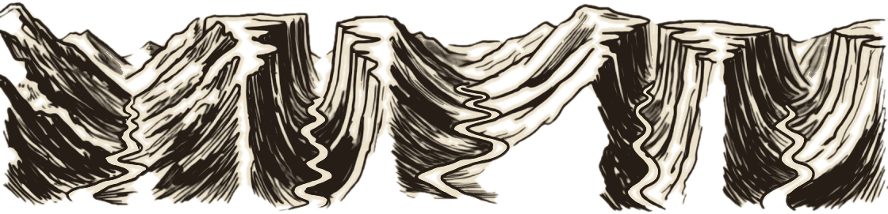


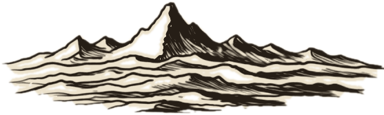

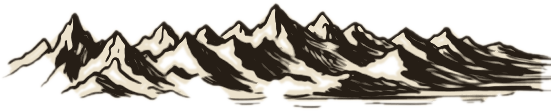

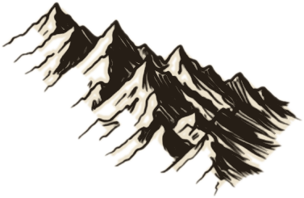


限界: 峡13は5つの峡谷が1枚につながり、川(薄桃色)が背景扱いで消えている(川は別途描く前提なら問題なし)。峡5(5本の柱)・峡24・峡27は複数が1個に連結。端の切れ端1個は除外。目視確認のみ。
ユーザーが送ってくれた砂漠の見本。砂丘、オアシス、枯れ木、サボテン、岩、台地、峡谷、らくだ隊、天幕、日没、トカゲなど。山以外の飾り(ランドマーク用の素材)も含みます。


限界: 砂の紋様(波・さざ波)は大きな面の模様のため、砂6・砂8のように断片になった(模様は別方式で扱う想定)。らくだ隊などの小物は小さく粗い。目視確認のみ。
次: 部品ごとの点数表(地形のどこに多いか)の案をこの上に作る。